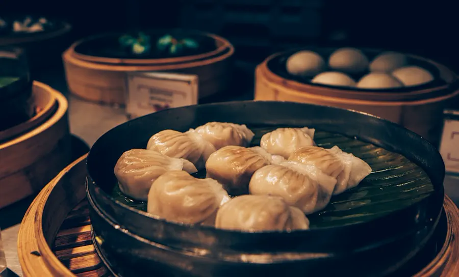
尚食·卢记烧饼
十全街966号
这次主要去拙政园、苏州博物馆、平江路、耦园、留园、艺圃、山塘街、十全街和盘门。
每天一个区域，留出拍照、吃饭和休息的余量
已锁定：9月1日整天写真 · 9C8929返程
临时改变路线时，按时段选择就近方案

十全街966号
金狮大楼东北门旁
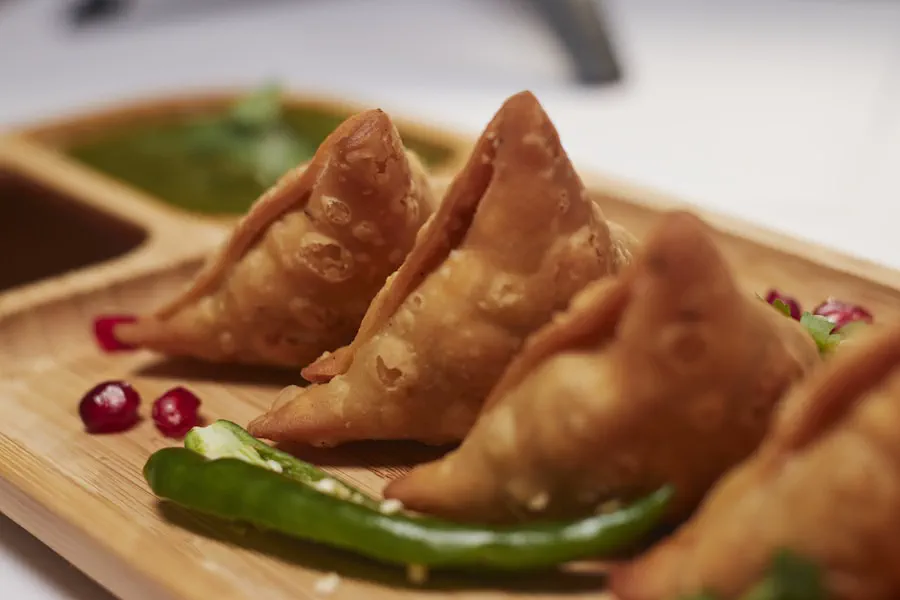
西中市60号
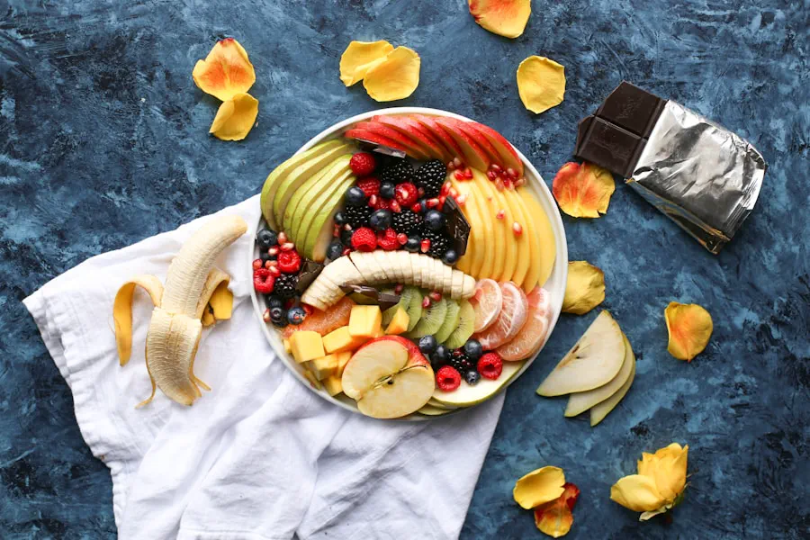
山塘街351号
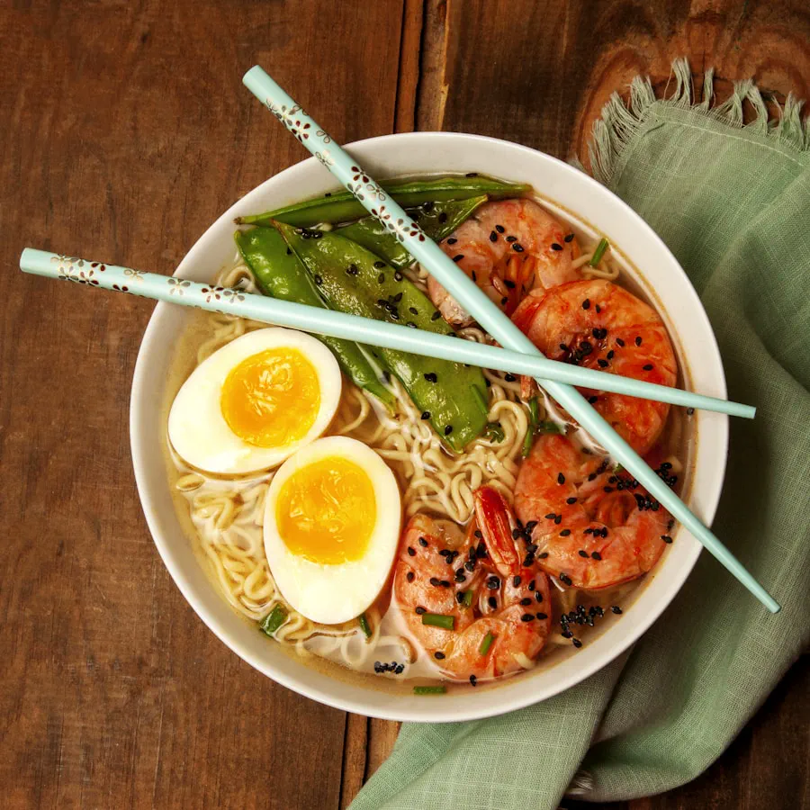
平江路与菉葭巷交叉口西行40米路南
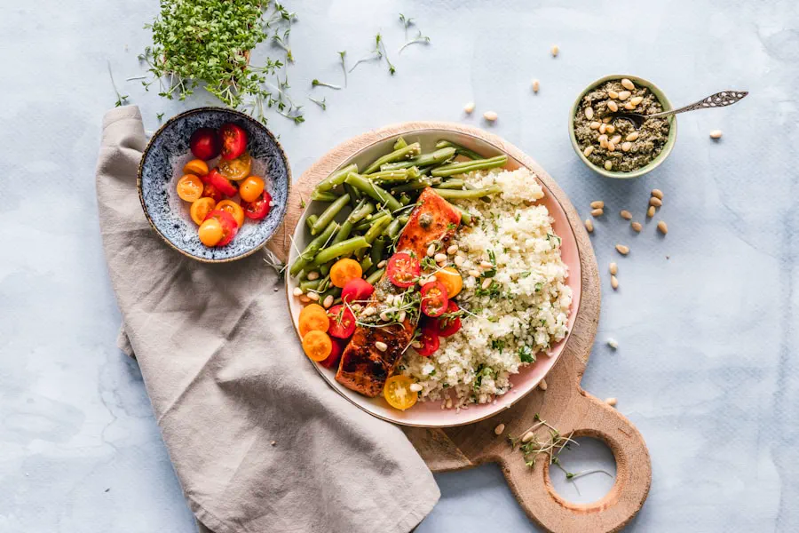
狮林寺巷99号金谷里艺术馆1层
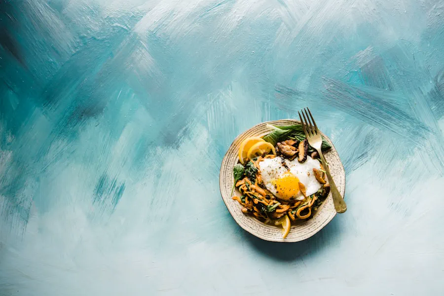
十全街783号
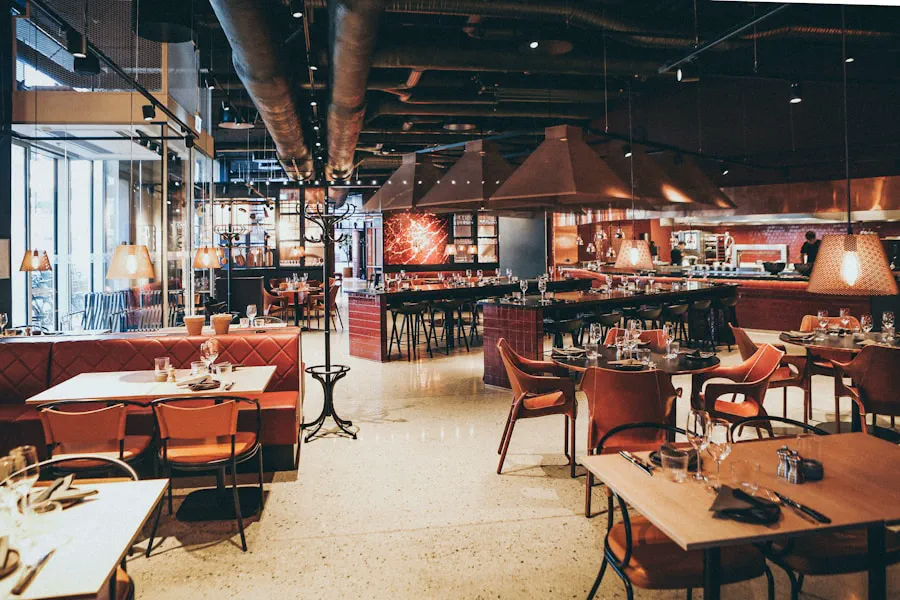
人民中路·房地产大厦西南门北约60米（门牌待核）
观前街57号（稻香村对面二楼）
方基上65号1楼
学士街436号
广济路新民桥菜市场
按当天所在区域替换，不与主线全部叠加
以下景点按地址归入最近的一天：临时改变计划时只选其中 1 个，先看天气、开放和体力。
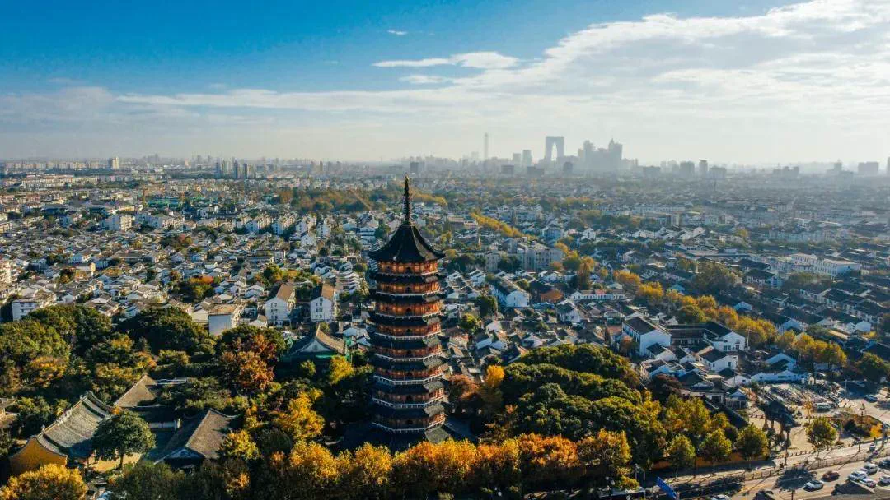
09.03 · 古城西部替代
虎丘山门内8号
可替换山塘街或留园后的一个节点；仅在天气好、体力足够时安排，不和西园寺、留园、艺圃、山塘街全部硬拼。
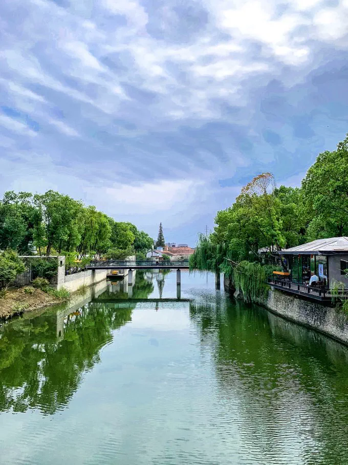
09.03 · 古城西部替代
枫桥路16号
可替换艺圃或缩短山塘街，重点看碑廊、寺院和运河；雨势大时优先保留室内与廊下。
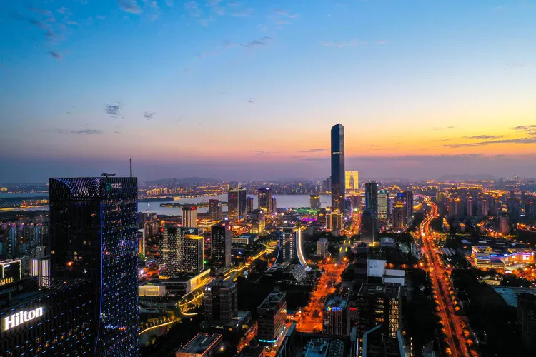
09.02 · 古城东北线替代
苏州工业园区金鸡湖景区
适合傍晚看湖景和城市天际线；可与东方之门二选一，替换耦园或部分平江路，不建议放到返程日。
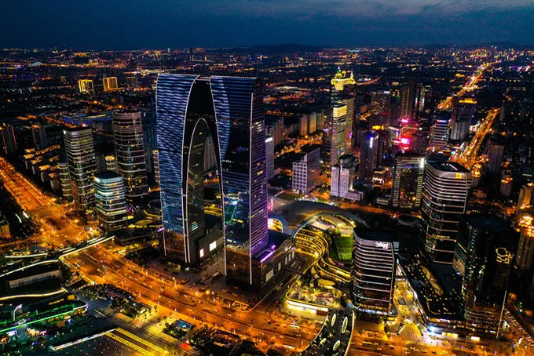
09.02 · 古城东北线替代
星融街与星港街辅路交叉口西南约140米
想看现代苏州时替换耦园或部分平江路；与金鸡湖组成东线备选，二选一即可。
每段都留有缓冲，不把最后一天排成冲刺
18:30落地后，约19:10乘机场联络线（市域线）到虹桥机场 T2，19:50左右到；步行到虹桥火车站后，推荐20:34乘 G7314，21:06到苏州站。
酒店就在乐桥站旁。能顺路坐地铁就坐地铁，短距离步行更直接；带妆、下雨或行李较多时改打车。
17:45从酒店出发，地铁4号线到苏州站；推荐18:41乘 D2211，19:19到上海虹桥站，再前往虹桥 T1 搭乘21:20的春秋航空 9C8929。
信息会随着天气和预约状态更新